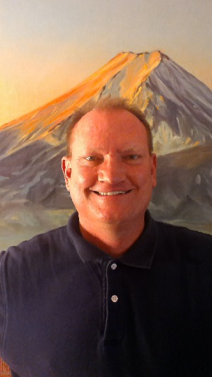

About Me
Hello and welcome to my page. During the day, I make a living as a software engineer within the Defense and Aerospace industry. I graduated from the University of Arizona (UofA) in 1992 with a Bachelor’s of Science in Aerospace Engineering. Within the span of my 24 plus years of experience, I have worked independently and collaboratively with other engineers with diverse disciplines to derive products and solutions in defense of our nation and in support of our warfighters who defend her. In today’s current global affairs, it is important that the United States of America (USA) maintain the technological advantage over her adversaries and I’m proud that I have contributed to that advantage. With that said, I’m looking to enhance my skills and satisfy my personal interests. Believe it or not, after 24 plus years of being out of college, I have enrolled into a Full Stack Web Development boot camp at the UofA. I believe in the old saying, “You’re never too old to learn” because that’s what I intend to do. It may be more difficult now than it would’ve been years ago, but I will see it through. With this newly acquired knowledge my goal is to contribute to the online technologies that we all have become dependent upon to function in our daily lives. I hope the time and money I have chosen to invest into this personal endeavor will be rewarding. Stay tuned to find out.
Connect with Me